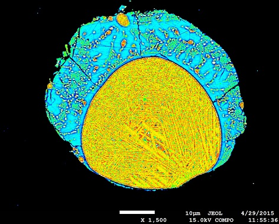
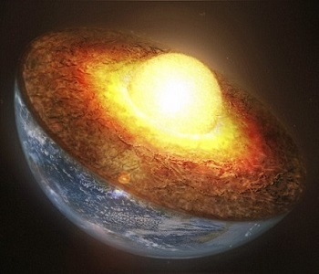

Thanks for hopping onto my personal website!
I am a PhD candidate at the Anton Pannekoek Astronomical Institute, University of Amsterdam and the Dept of Earth and Life Sciences, VU University Amsterdam. I am an astronomer and an experimental exo-geophysicist. I am currently working with Prof. Carsten Dominik and Prof. Wim van Westrenen to study the interiors of rocky extra-solar planets.
Research
Extra-solar planets, or exoplanets, are planets in orbit around stars other than our sun. Some of these exoplanets are similar to our home planet in many ways. There are so many exoplanets like Earth that it is possible for a few of them to harbour alien life! As a scientist, I am interested in investigating what these exopanets are made up of!
I am currently working in the high-pressure laboratory of VU University to study the interior structure and composition of rocky exoplanets. I have also developed models to theoretically compute the interior structure of rocky exoplanets.
|
 High pressure experiments |
 Interior structure models |
About Me
I currently live in the most beautiful Dutch city, Amsterdam. I obtained my master's degree in Astrophysics from KU Leuven, Belgium and my bachelor's degree in Electronics Engineering from IIT Kharagpur, India. I have also lived in another beautiful city, Mumbai, for a couple of years working for an investment bank, Nomura.